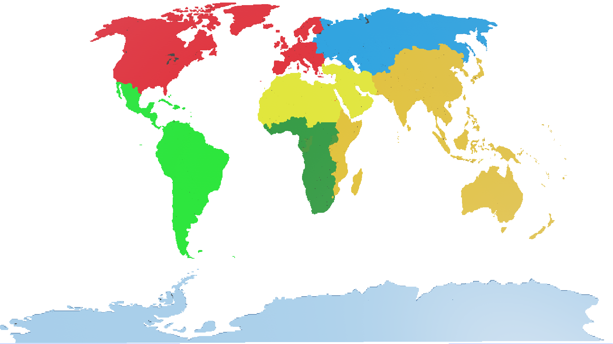

Las regiones Geopoliticas del Mundo
El Banco Mundial divide el mundo en seis (6) regiones geopolíticas principales para fines administrativos, operativos y de análisis de datos. Esta clasificación le permite agrupar a los países con características geográficas y desafíos de desarrollo similares, y así concentrar sus esfuerzos.

El Folklore Periodico
El primer libro o Enciclopedia de Ciencia Ficción moderna, creado en 1870. El Folklore Periódico reside en cómo transforma las propiedades químicas en fundamentos sociales y narrativos.